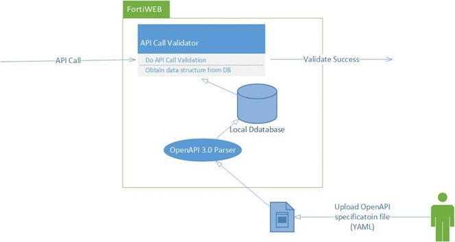

FortiWeb’s OpenAPI validation feature allows you to upload an OpenAPI description file (in YAML or JSON format) that defines your API’s structure, endpoints, and data types.

The OpenAPI Specification (OAS) defines a standard, language-agnostic interface to RESTful APIs, which allows both humans and computers to discover and understand the capabilities of the service without access to source code, documentation, or through network traffic inspection. When properly defined, you can understand and interact with the remote service with a minimal amount of implementation logic.
curl -X GET https://edb.apps.fortidemo.net/api/employees?limit=2 \
-H "Content-Type: application/json" \
-H "Accept: application/json" 2>/dev/null | jq -r
[
{
"id": 1,
"firstName": "Matthew",
"lastName": "Aguilar",
"email": "isampson@example.com"
},
{
"id": 2,
"firstName": "Breanna",
"lastName": "Aguirre",
"email": "sabrina30@example.org"
}
]
# Example API Call
curl -X GET "https://edb.apps.fortidemo.net/api/employees?limit=a" \
-H "Content-Type: application/json" \
-H "Accept: application/json" 2>/dev/null | sed 's/,}/}/' | jq -r
{
"page_title": "Web Page Blocked!",
"display_message": "The page cannot be displayed. Please contact the administrator for additional information.",
"client_IP": "10.2.1.127",
"URL": "edb.apps-int.fortidemo.net/api/employees",
"attack_ID": "20000038",
"message_ID": "000000009976"
}